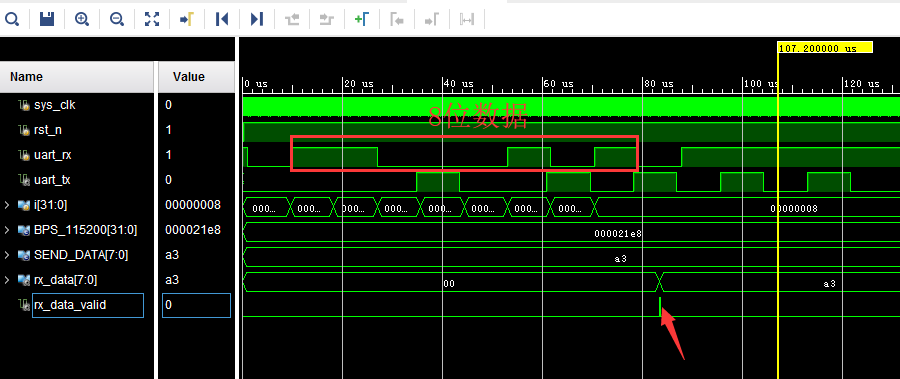

《第十一章》UART 实验¶
实验Vivado工程为“rs232_test”。
本章利用开发板上PL端的UART接口电路实现UART数据传输。
11.1 程序设计¶
本文所述的串口指异步串行通信,异步串行是指UART(Universal Asynchronous Receiver/Transmitter),通用异步接收/发送。本实验程序设计为每秒钟向串口发送” HELLO ALINX”,如果收到RXD接收的数据,再把接收的数据发送出去,实现回环的功能。
11.1.1 异步串口通信协议¶
消息帧从一个低位起始位开始,后面是7个或8个数据位,一个可用的奇偶位和一个或几个高位停止位。接收器发现开始位时它就知道数据准备发送,并尝试与发送器时钟频率同步。如果选择了奇偶校验,UART就在数据位后面加上奇偶位。奇偶位可用来帮助错误校验。在接收过程中,UART从消息帧中去掉起始位和结束位,对进来的字节进行奇偶校验,并将数据字节从串行转换成并行。UART 传输时序如下图所示:
从波形上可以看出起始位是低电平,停止位和空闲位都是高电平,也就是说没有数据传输时是高电平,利用这个特点我们可以准确接收数据,当一个下降沿事件发生时,我们认为将进行一次数据传输。
11.1.2波特率¶
常见的串口通信波特率有2400 、9600、115200等,发送和接收波特率必须保持一致才能正确通信。波特率是指1秒最大传输的数据位数,包括起始位、数据位、校验位、停止位。假如通信波特率设定为9600,那么一个数据位的时间长度是1/9600秒,本实验中的波特率由50MHz时钟产生。
11.1.3 接收模块设计¶
串口接收模块uart_rx是个参数化可配置模块,参数“CLK_FRE”定义接收模块的系统时钟频率,单位是Mhz,参数“BAUD_RATE”是波特率。接收状态机状态转换图如下:

“S_IDLE”状态为空闲状态,上电后进入“S_IDLE”,如果信号“rx_pin”有下降沿,我们认为是串口的起始位,进入状态“S_START”,等一个BIT时间起始位结束后进入数据位接收状态“S_REC_BYTE”,本实验中数据位设计是8位,接收完成以后进入“S_STOP”状态,在“S_STOP”没有等待一个BIT周期, 只等待了半个BIT时间,这是因为如果等待了一个周期,有可能会错过下一个数据的起始位判断,最后进入“S_DATA”状态,将接收到的数据送到其他模块。在这个模块我们提一点:为了满足采样定理,在接受数据时每个数据都在波特率计数器的时间中点进行采样,以避免数据出错的情况:
//receive serial data bit data
always@(posedge clk or negedge rst_n)
begin
if(rst_n == 1'b0)
rx_bits <= 8'd0;
else if(state == S_REC_BYTE && cycle_cnt == CYCLE/2 - 1)
rx_bits[bit_cnt] <= rx_pin;
else
rx_bits <= rx_bits;
end
注意:本实验没有设计奇偶校验位。
信号名称 方向 宽度(bit) 说明 clk in 1 系统时钟 rst_n in 1 异步复位,低电平复位 rx_data out 8 接收到的串口数据(8位数据) rx_data_valid out 1 接收到的串口数据有效(高有效) rx_data_ready in 1 表示用户可以从接收模块接收数据,当rx_data_ready和rx_data_valid都为高时数据送出 rx_pin in 1 串口接收数据输入 串口接收模块uart_rx端口
11.1.4 发送模块设计¶
发送模块uart_tx设计和接收模块相似,也是使用状态机,状态转换图如下:

上电后进入“S_IDLE”空闲状态,如果有发送请求,进入发送起始位状态“S_START”,起始位发送完成后进入发送数据位状态“S_SEND_BYTE”,数据位发送完成后进入发送停止位状态“S_STOP”,停止位发送完成后又进入空闲状态。在数据发送模块中,从顶层模块写入的数据直接传递给寄存器‘tx_reg’,并通过‘tx_reg’寄存器模拟串口传输协议在状态机的条件转换下进行数据传送:
always@(posedge clk or negedge rst_n)
begin
if(rst_n == 1'b0)
tx_reg <= 1'b1;
else
case(state)
S_IDLE,S_STOP:
tx_reg <= 1'b1;
S_START:
tx_reg <= 1'b0;
S_SEND_BYTE:
tx_reg <= tx_data_latch[bit_cnt];
default:
tx_reg <= 1'b1;
endcase
end
串口发送模块uart_tx端口
信号名称 |
方向 |
宽度(bit) |
说明 |
|---|---|---|---|
clk |
in |
1 |
系统时钟 |
rst_n |
in |
1 |
异步复位,低电平复位 |
tx_data |
in |
8 |
要发送的串口数据(8位数据) |
tx_data_valid |
in |
1 |
发送的串口数据有效(高有效) |
tx_data_ready |
out |
1 |
发送模块已准备好发送数据,用户可将tx_data_valid信号拉高发送数据给发送模块。当tx_data_ready和tx_data_valid都为高时数据被发送 |
tx_pin |
out |
1 |
串口发送数据发送 |
11.1.5 波特率的产生¶
在发送和接收模块中,声明了参数CYCLE,也就是UART一个周期的计数值,当然计数是在50MHz时钟下进行的。用户只要设定好CLK_FRE和BAUD_RATE这两个参数即可。

11.1.6 测试程序¶
测试程序设计FPGA为1秒向串口发送一次“HELLO ALINXrn”,不发送期间,如果接受到串口数据,直接把接收到的数据送到发送模块再返回。“rn”,在这里和C语言中表示一致,都是回车换行。 测试程序分别例化了发送模块和接收模块,同时将参数传递进去,波特率设置为115200。
always@(posedge sys_clk or negedge rst_n)
begin
if(rst_n == 1'b0)
begin
wait_cnt <= 32'd0;
tx_data <= 8'd0;
state <= IDLE;
tx_cnt <= 8'd0;
tx_data_valid <= 1'b0;
end
else
case(state)
IDLE:
state <= SEND;
SEND:
begin
wait_cnt <= 32'd0;
tx_data <= tx_str;
if(tx_data_valid == 1'b1 && tx_data_ready == 1'b1 && tx_cnt < 8'd12)//Send 12 bytes data
begin
tx_cnt <= tx_cnt + 8'd1; //Send data counter
end
else if(tx_data_valid && tx_data_ready)//last byte sent is complete
begin
tx_cnt <= 8'd0;
tx_data_valid <= 1'b0;
state <= WAIT;
end
else if(~tx_data_valid)
begin
tx_data_valid <= 1'b1;
end
end
WAIT:
begin
wait_cnt <= wait_cnt + 32'd1;
if(rx_data_valid == 1'b1)
begin
tx_data_valid <= 1'b1;
tx_data <= rx_data; // send uart received data
end
else if(tx_data_valid && tx_data_ready)
begin
tx_data_valid <= 1'b0;
end
else if(wait_cnt >= CLK_FRE * 1000000) // wait for 1 second
state <= SEND;
end
default:
state <= IDLE;
endcase
end
//combinational logic
//Send "HELLO ALINX\r\n"
always@(*)
begin
case(tx_cnt)
8'd0 : tx_str <= "H";
8'd1 : tx_str <= "E";
8'd2 : tx_str <= "L";
8'd3 : tx_str <= "L";
8'd4 : tx_str <= "O";
8'd5 : tx_str <= " ";
8'd6 : tx_str <= "A";
8'd7 : tx_str <= "L";
8'd8 : tx_str <= "I";
8'd9 : tx_str <= "N";
8'd10: tx_str <= "X";
8'd11: tx_str <= "\r";
8'd12: tx_str <= "\n";
default:tx_str <= 8'd0;
endcase
end
uart_rx#
(
.CLK_FRE(CLK_FRE),
.BAUD_RATE(115200)
) uart_rx_inst
(
.clk (sys_clk ),
.rst_n (rst_n ),
.rx_data (rx_data ),
.rx_data_valid (rx_data_valid ),
.rx_data_ready (rx_data_ready ),
.rx_pin (uart_rx )
);
uart_tx#
(
.CLK_FRE(CLK_FRE),
.BAUD_RATE(115200)
) uart_tx_inst
(
.clk (sys_clk ),
.rst_n (rst_n ),
.tx_data (tx_data ),
.tx_data_valid (tx_data_valid ),
.tx_data_ready (tx_data_ready ),
.tx_pin (uart_tx )
);
11.2仿真¶
这里我们添加了一个串口接收的激励程序vtf_uart_test.v文件,用来仿真uart串口接收。这里向串口模块的uart_rx发送0xa3的数据, 每位的数据按115200的波特率发送,1位起始位,8位数据位和1位停止位。

仿真的结果如下,当程序接收到8位数据的时候,rx_data_valid有效,rx_data[7:0]的数据位a3。
11.3实验测试¶
通过USB连接PL_UART接口到电脑上

在设备管理器中找到串口号”COM5”
打开串口调试,端口选择“COM79”(根据自己情况选择),波特率设置115200,检验位选None,数据位选8,停止位选1,然后点击“打开串口”。此软件在例程文件夹下。

打开串口以后,每秒可收到“HELLO ALINX”,在发送区输入框输入要发送的文字,点击“手动发送”,可以看到接收到自己发送的字符。


ZYNQ MPSoC开发平台 FPGA教程 - Alinx官方网站